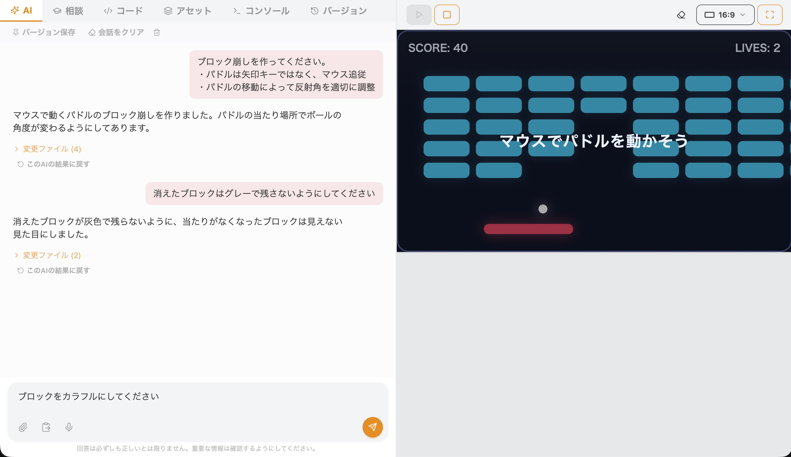
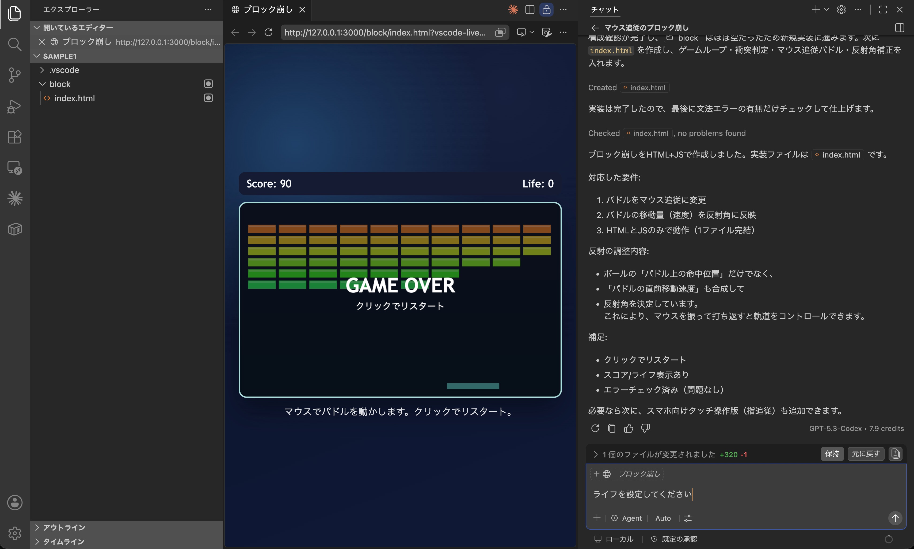

バイブコーディングで、
子どもの学びはどう変わるのか
登壇者
アルスクール株式会社 代表 村野 智浩
2026.6.15 (Mon)
コエテコEXPO
「プログラミング教育は
死んだ」
死んだ」
もはや、コードはAIが書いている
Anthropic
「Claude」の新規プログラムコードの 80%以上を、 Claude自身が記述している。
私自身
99%、AIによる開発。
保護者として、子どもに
「AI時代でもプログラミングを学べ」
と強く言えますか？
それでも、プログラミング教育には価値があるけれど…
でも――
バイブコーディングと、プログラミング教室は
もっと向き合わないといけない。
アルスクールのAIレッスン
2025.06
プロンプトのレッスン
2025.11
バイブコーディング スタート
2026.04
本格的にバイブコーディングを導入
自社でバイブコーディング環境構築（アルスタジオV）
小学生コース：バイブコーディングとScratchを並行
中学生コース：バイブコーディング（AIアプリ）／テキストプログラミング など領域に特化したレッスン
小学生コース：バイブコーディングとScratchを並行
中学生コース：バイブコーディング（AIアプリ）／テキストプログラミング など領域に特化したレッスン
2026.06
子どもたちが自作したECサイトで販売を開始
AIも活用したオリジナルTシャツなどを販売。
アルスタジオV（自社開発）
- ブラウザでバイブコーディング
- Azure OpenAI を活用することで、小学生も利用可
- 教室内の作品共有・リミックス
- 使いやすさと学習面の両立を追求

VSCode + GitHub Copilot
- 13歳以上
- 大人と同等の開発環境
- スプレッドシート連動など高度なレッスン

「誰でも作れる」≠「誰でも“いいもの・すごいもの”を作れる」
- エンジニアに限られていた技術障壁が壊れ、開発が民主化された。
- すごいもの・いいものを作り切るのはむちゃくちゃ大変。
- アプリ開発で、より熱意と根性の差が顕著に出る社会に。
4つの評価軸
01
企画・設計する力
02
構築・検証・修正する力
03
AI・テクノロジーの特性理解
04
やりきる力
スキル・レッスンの具体例
| 評価軸 | スキル | レッスン例 |
|---|---|---|
| 企画・設計する力 | 何をつくるかを考える | ベースのゲームにオリジナル機能を追加する |
| 企画を具体化できる | お手本どおりの作品に挑戦 | |
| 構築・検証・修正する力 | バグを見つける | バグのある教材を渡し、発見させる |
| 修正したい箇所のみ修正する | 類似した敵のうち1つだけ動きを変える | |
| AI・テクノロジーの特性理解 | データ保存の仕組みを知る | 最高得点保存をつくる |
| スレッドをクリアする | 自由創作の中で声がけする | |
| やりきる力 | 自由創作の中で声がけする | |
教材としての魅力 (1/2)
低い床
誰でもすぐ始められる
高い天井
本格的なプロダクトまで届く
広い壁
多様な作品・表現が生まれる
スクラッチの理念だが、スクラッチ以上に強力。
楽しく子どもが前を向いて成長に向き合える最高の教材
教材としての魅力 (2/2)
製造フェーズ（＝プログラミング）の学習が短縮できた
→ プロダクト開発の本質と向き合うようになった
「何でも作れるエンジニアがいたら何を作りますか？」
アルスタジオVの紹介
プログラミング教室や学校などの教育機関に提供予定
ライセンス代
1アカウント 3,000円前後 /月 で検討中
- 教材代、システム利用料込み
- 利用可能なAIトークンは標準的な1か月使用量程度の想定
- それを超えた場合、トークンの追加購入が可能
ご案内・お問い合わせ
FORM
アンケートにご回答ください
ご回答いただいた方に、
アルスタジオVのデモアカウントを提供します
LINE
アルスクール公式LINE

AI×子どもの学びの最新情報を定期配信。
ぜひ友だち登録してください
質疑応答
ご質問・ご意見をお聞かせください